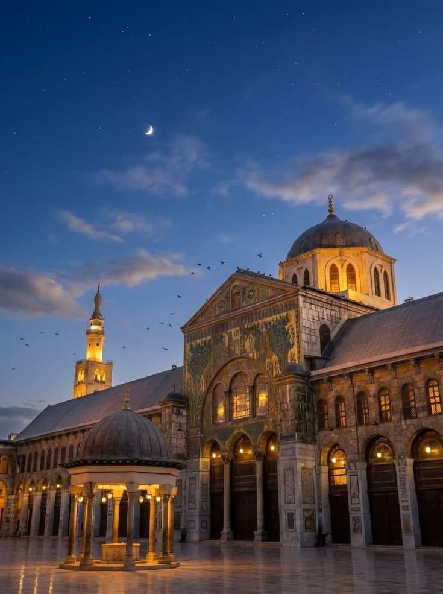
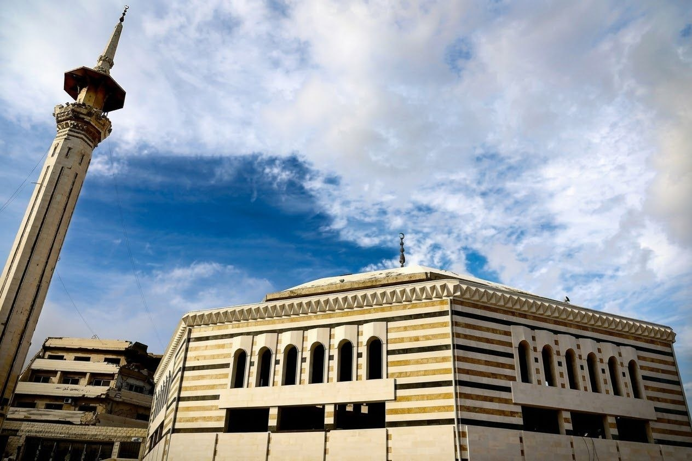
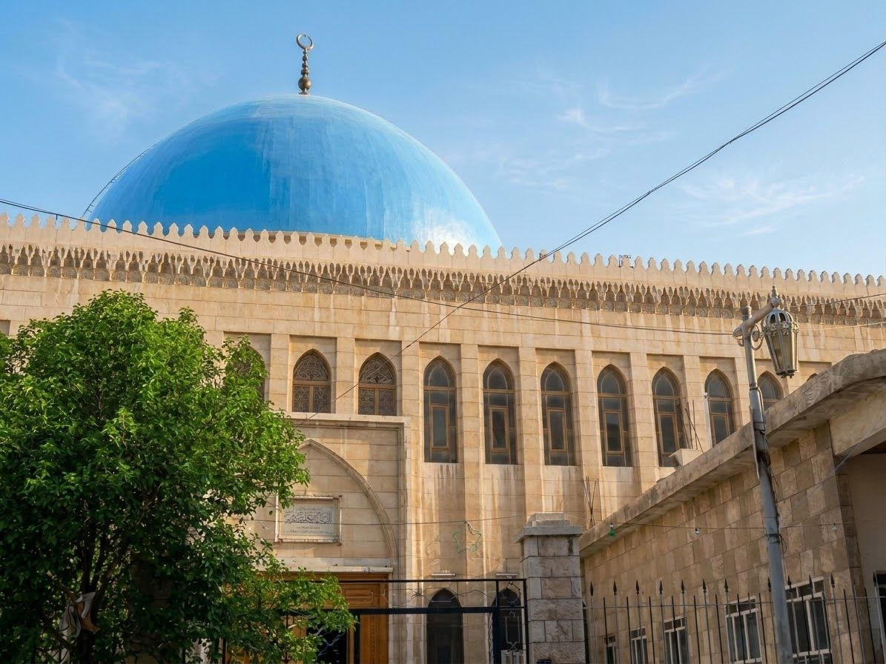
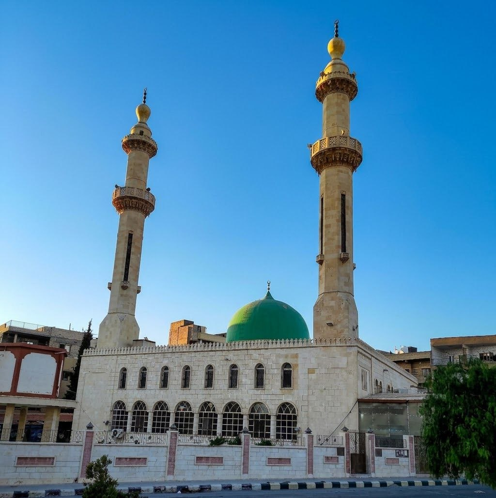
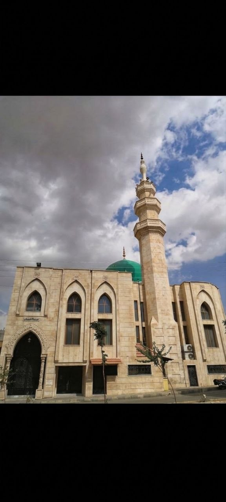

نبذة: يُعد من أعظم المساجد الإسلامية وأقدمها وأجملها في العالم. يتميز بباحته الرخامية الواسعة، وقبته الشهيرة (قبة النسر)، ومآذنه الثلاث العريقة.


نبذة: من أعرق مساجد دوما التاريخية، يتميز بعمارته التقليدية التي تمزج بين الحجر الدمشقي الأصيل والتصميم الهندسي المتناسق في وسط المدينة.
نبذة: يُعتبر من المساجد الحيوية والهامة، ويتميز بمئذنته الشامخة وهندسته المعمارية المتناسقة وحضوره الروحي والمجتمعي البارز في قلب المنطقة.


نبذة: يتميز بقبته الزرقاء الكبيرة والبارزة وبتصميمه المعماري الواضح الذي يعكس تنوع وروعة العمارة الإسلامية والتراث العمراني في القلمون.
نبذة: يُعد من المساجد التاريخية والأثرية العريقة، ويتميز بعمارته الحجرية التقليدية المتينة التي تعكس طابع التراث الأصيل لمنطقة القلمون وعراقتها.
